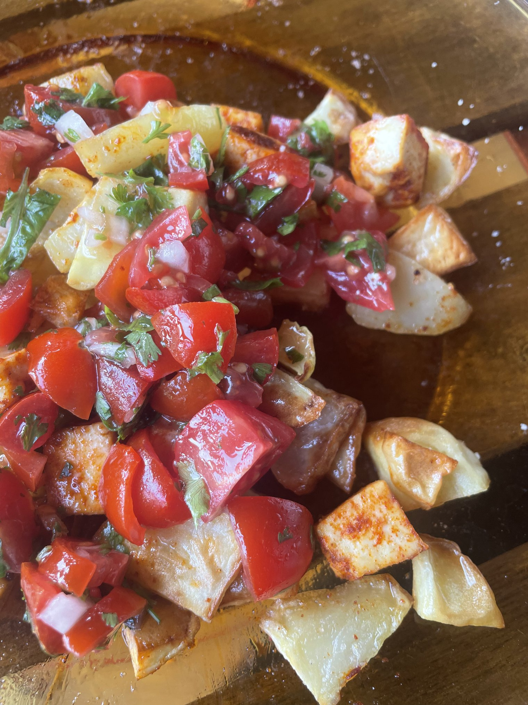

Tofu, patata y pico de gallo
Ingredientes
2×
- 2 patatas
- 200 g de tofu
- aceite de oliva
- sal
- pimentón
- 2 tomates
- 0.5 cebolla
- cilantro
- zumo de 1/2 lima

Preparación
Paso 1
Cortar 2 patatas y 200 g de tofu en dados, aliñar con aceite de oliva, sal y pimentón, y hornear 35min a 200ºC.
Paso 2
Para el pico de gallo, picar 2 tomates, 0.5 cebolla y cilantro, y aliñar con el zumo de 1/2 lima, aceite y sal.
Paso 3
Servir la patata y el tofu con el pico de gallo.
Resumen
2 patatas
200 g de tofu
aceite de oliva
sal
pimentón
Cortar aliñar hornear 200ºC
2 tomates
0.5 cebolla
cilantro
zumo de 1/2 lima
picar aliñar